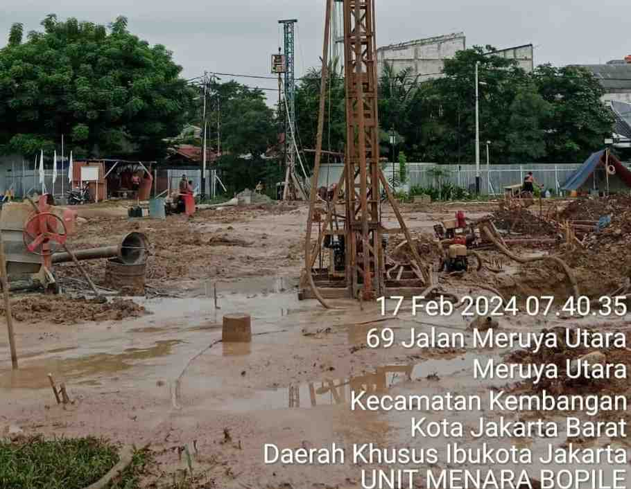

Harga Bore Pile Diameter 30cm Jakarta Terbaru 2026
Bore pile diameter 30cm adalah ukuran paling sering digunakan untuk membuat bangunan, ruko, gedung, dan rumah 1-2 lantai di Jakarta. Kalkulator ini dibuat untuk menghitung estimasi total biaya jasa borepile dari harga diameter 30cm (mesin & manual), bisa mengatur harga sendiri sesuai keinginan. Dibuat oleh tim Agung Perkasa Borepile dari data proyek nyata yang kami kerjakan di lapangan.
Kalkulator Estimasi Biaya Bore Pile
Estimasi Total Biaya JASA BOR
Tabel Harga Bore Pile Jakarta 2026 (Jasa Bor Saja)
Berikut harga JASA PENGEBORAN SAJA (belum termasuk material beton & besi) untuk wilayah Jakarta dan sekitarnya. Kedalaman pengeboran bergantung pada diameter dan kondisi lapisan tanah, di lapangan kami pernah tembus hingga kedalaman 25-30meter, pastikan cek sondir dulu agar mengetahui kedalaman yang tepat untuk pengeboran hingga mencapai tanah keras.
Bore Pile Mesin (Mini Crane)
| Diameter | Harga (Rp/m) | Kedalaman Maks | Cocok Untuk |
|---|---|---|---|
| 30 cm | 120.000 | 30 meter | Rumah 1-2 lantai |
| 40 cm | 135.000 | 30 meter | Ruko, kantor |
| 50 cm | 190.000 | 30 meter | Gudang, pabrik kecil |
| 60 cm | Hubungi Kami | 30 meter | Hotel 3-4 lantai |
| 80 cm | Hubungi Kami | 30 meter | Gedung 5-8 lantai |
Bore Pile Manual
| Diameter | Harga (Rp/m) | Kedalaman Maks | Cocok Untuk |
|---|---|---|---|
| 20 cm | 70.000 | 10 meter | Area sangat sempit |
| 25 cm | 75.000 | 10 meter | Gang kecil |
| 30 cm | 80.000 | 10 meter | Rumah 1-2 lantai (tanah padat) |
| 40 cm | 100.000 | 10 meter | Rumah 2 lantai (tanah padat) |

Bore Pile Mesin (Mini Crane): Kedalaman pengeboran hingga 30 meter karena lebih kuat mencapai lapisan tanah yang dalam, cocok untuk bangunan besar dan tanah lunak.
Bore Pile Manual: Kedalaman hingga 10 meter, lebih ekonomis, cocok untuk area sempit atau terbatas dan bangunan kecil.
Konsultasikan dengan kami untuk menentukan metode terbaik sesuai kondisi tanah dan beban bangunan Anda.
Perbandingan Diameter 30cm vs 40cm vs 50cm untuk Rumah Jakarta
Diameter 30cm adalah yang paling ekonomis untuk rumah 1-2 lantai. Berikut perbandingan dengan diameter yang lebih besar:
| Diameter | Harga (Rp/m) | Daya Dukung | Cocok Untuk |
|---|---|---|---|
| 30 cm | 120.000 | 15-25 ton | Rumah 1-2 lantai |
| 40 cm | 135.000 | 25-40 ton | Ruko, kantor 2-3 lantai |
| 50 cm | 190.000 | 40-60 ton | Gudang, pabrik kecil |
Daya dukung di atas adalah estimasi untuk kedalaman 10-12 meter di tanah keras Jakarta.
Keuntungan Memilih Bore Pile Diameter 30cm
Cocok untuk Rumah Tinggal
Daya tahan sudah cukup untuk mendukung beban bangunan 1-2 lantai.
Harga Paling Murah
Dibandingkan dengan diameter 40cm ke atas, diameter 30cm adalah harga yang paling murah dan terjangkau.
Metode Fleksibel
Bisa dikerjakan dengan bore pile mesin (mini crane) maupun manual menggunakan tenaga manusia.
Paling Sering Digunakan
Banyak kontraktor menggunakan diameter 30cm untuk 90% proyek rumah tinggal di Jakarta.
Daya Dukung Bore Pile Diameter 30cm

Daya dukung bore pile diameter 30cm bervariasi tergantung kedalaman dan kondisi tanah:
- Kedalaman 6 meter: mampu menahan beban 10-15 ton
- Kedalaman 10 meter: mampu menahan beban 15-25 ton
- Kedalaman 15 meter: mampu menahan beban 25-35 ton
- Kedalaman 20 meter: mampu menahan beban 35-50 ton
Untuk rumah 2 lantai standar, kedalaman 8-12 meter sudah cukup.
Butuh harga untuk semua diameter di Jakarta? Lihat harga bore pile Jakarta semua diameter →
Biaya Tambahan yang Perlu Diperhatikan
Mobilisasi Alat
Mesin: Rp3-5jt (Jabodetabek) | Manual: Rp1-2jt
Minimal Order
Bore pile mesin: 200m | Manual: 100m, di bawah itu bisa menghubungi admin kami
Sedot Lumpur
Tergantung volume, biasanya (Rp800.000 - Rp1.200.000/rit)
Data Sondir
Wajib ada karena sangat penting untuk menentukan kedalaman pondasi yang tepat
Contoh Hitungan Proyek Bore Pile Diameter 30cm
Bore Pile Mesin 30cm
Proyek: Rumah 2 lantai, Bekasi
Spesifikasi: Ø30cm, kedalaman 12m, 16 titik
Biaya: 12m × Rp120.000 × 16 = Rp23.040.000
+ mobilisasi Rp3jt = Rp26.040.000
Waktu: 7 hari kerja
Bore Pile Manual 30cm
Proyek: Rumah 1 lantai, Jakarta
Spesifikasi: Ø30cm, kedalaman 5m, 12 titik
Biaya: 5m × Rp80.000 × 12 = Rp4.800.000
+ mobilisasi Rp1,5jt = Rp6.300.000
Waktu: 5 hari kerja

Komitmen & Garansi Mutu
Kami memberikan garansi penuh atas kualitas dalam pengerjaan proyek. Kami menjamin kualitas terbaik karena didukung oleh tim ahli kami yang sangat berpengalaman membuat pondasi dalam (khususnya bore pile)
Pertanyaan yang Sering Diajukan (Diameter 30cm)
Cukup. Dengan kedalaman 8-12 meter, diameter 30cm mampu menahan beban rumah 2 lantai dengan aman. Pastikan data sondir tanah sudah dicek dan ditentukan kedalaman yang tepat..
Standar harga jasa bor diameter 30cm: mesin Rp120.000/m, manual Rp80.000/m untuk jasa pengeboran, perakitan besi tulangan, dan pengecoran beton (harga disamping belum termasuk harga material), material bisa beli sendiri dan diberikan kepada kami untuk dikerjakan.
Bisa. Bore pile manual bisa melayani diameter 30cm dengan kedalaman maksimal 6 meter. Harga lebih ekonomis, cocok untuk rumah 1 lantai atau proyek kecil dan area terbatas.
Untuk rumah 1-2 lantai standar dengan luas bangunan 100-200m², jumlah titik ideal antara 12-20 titik. Konsultasikan dengan tim teknis kami untuk perhitungan yang lebih akurat sesuai gambar bangunan Anda.
Betul. Kami melayani area Jabodetabek (Jakarta, Bekasi, Bogor, Depok, Tangerang).
Ya. Kami melayani seluruh area pulau Jawa saja.
Butuh bore pile untuk proyek anda?
Dapatkan penawaran harga untuk bore pile diameter 30cm
Konsultasi GratisArtikel Blog
Insight pondasi dan konstruksi untuk membantu keputusan proyek Anda.

Harga Bore pile 2026
Lihat harga terbaru untuk semua diameter bore pile terbaru 2026 .
Baca Artikel →
Perbedaan Bore Pile dan Strauss Pile
Perbandingan lengkap agar Anda dapat memilih jenis pondasi yang tepat.
Baca Artikel →
Proses Pengerjaan Bore Pile
Penjelasan lengkap tentang langkah-langkah pengerjaan bore pile.
Baca Artikel →Cakupan Area Layanan Kami
Agung Perkasa Borepile melayani proyek konstruksi di wilayah Jabodetabek berikut ini.
Jakarta Pusat
Jakarta Barat
Jakarta Selatan
Jakarta Timur
Jakarta Utara
Sekitarnya
Agung Perkasa Borepile
Jl. Sunter Muara II, RT.17/RW.05, Sunter Agung, Kec. Tj. Priok,
Jakarta Utara, DKI Jakarta | kode pos 14350
Dipublikasikan oleh Agung Perkasa Borepile
Spesialis pondasi borepile dengan pengalaman lebih dari 10 tahun di Jakarta. Data harga dan estimasi waktu di atas merupakan akumulasi dari semua proyek nyata yang telah kami kerjakan untuk client perorangan maupun kontraktor.